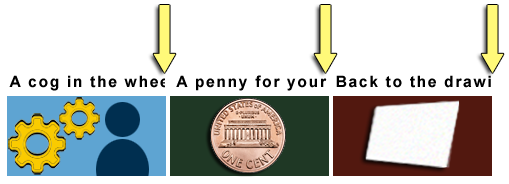
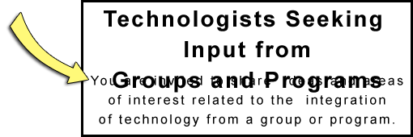

Increased space between paragraphs, lines, words, and letters helps some users with low vision to read, and helps users with dyslexia to increase their reading speed.
Your design should be flexible enough to render without any loss of content or functionality when the user modifies the text spacing, within these constraints:
Users modify the text spacing of your design using a custom style sheet, a bookmarklet or other tool.
Test your design with this bookmarklet: Test spacing bookmarklet It applies the expanded spacing styles. Be on the lookout for clipped text and overlapping text, as per the Bad examples below.
To design for text spacing override:
The following images show some types of failures when authors do not take into consideration that users may override spacing.
The bottom portion of the words "Your Needs" is cut off in a heading making that text unreadable in Figure 1. It should read "We Provide a Mobile Application Service to Meet Your Needs."
Example begins
Example ends
In Figure 2 the last portion of text is cut off in 3 side-by-side headings. The 1st heading should read "A cog in the wheel." But it reads "A cog in the whe". Only half of the second "e" is visible and the letter "l" is completely missing. The 2nd heading should read "A penny for your thoughts". But it reads "A penny for your". The 3rd should read "Back to the drawing board." But it reads "Back to the drawi".
Example begins

Example ends
In Figure 3 the last 3 words "Groups and Programs" of the heading "Technologists Seeking Input from Groups and Programs" overlap the following sentence. That sentence should read, "You are invited to share ideas and areas of interest related to the integration of technology from a group or program perspective." But the words "You are invited to share ideas and areas" are obscured and unreadable.
Example begins

Example ends
“Bad examples: Text Spacing” is from WCAG 2.1 Success Criterion: 1.4.12: Text Spacing.